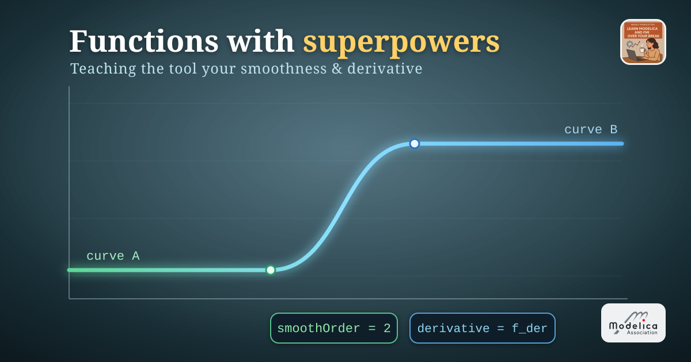
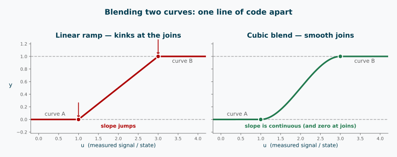
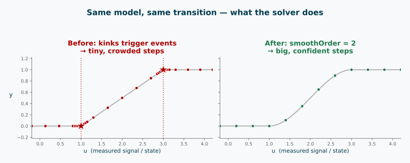

Functions with superpowers: teaching the tool your smoothness and derivative

I hope you’ve got your preferred drink in hand ☕️🫖💧
Last week I left you with a promise: encapsulate your algorithms in functions, and let the tool know things about them — like their smoothness, or their derivatives. 😉
So let me show you why you’d bother with a little horror story.
You build a cooling fan that switches between two speed curves depending on a measured temperature. You pick between them with a quick if on that temperature. You hit simulate — and because the temperature keeps wobbling around your switch point, the solver starts… chattering. Tiny steps. Events firing like popcorn 🍿 as it crosses the threshold back and forth. The result is technically correct and practically miserable.
The culprit? A transition that is not smooth. Today we fix it — properly.
The naïve blend (and why it snags)
Let’s make the horror story concrete. Two curves, and we want to cross from one to the other as some signal u moves through an interval — here u is the measured temperature. The laziest possible blend:
// somewhere inside a model — u is a state or measured signal
y = if u < u0 then yA
elseif u > u1 then yB
else yA + (yB - yA) * (u - u0) / (u1 - u0); // straight-line rampIt works. Sort of. The value is continuous — no jumps. But look at the corners at u0 and u1: the slope changes instantly. The curve has kinks. 📐
Two things bite here. First, each branch boundary is a switch the solver has to catch: because u is a state that can drift back and forth across u0 (or u1), the tool fires a state event on every crossing — and if u lingers near the threshold, those events keep coming. That’s our popcorn. 🍿 Second, even away from that, a kink is a discontinuous derivative, so the moment anything differentiates y the slope jump propagates and the integrator is forced into tiny, cautious steps.
(Had the switch been on time instead, you’d get off lighter — just two scheduled time events, each crossed once. The real chattering is a state-condition specialty. But the kink still hurts any derivative that depends on y, whichever variable drives it.)
Before we make it smooth, let’s do the other thing I promised in 035: give this logic a proper home. Right now it’s inline, and if we need the same blend in three places we’d copy-paste it three times. Instead, we wrap it in a function:
function linearBlend
input Real u; // the transition variable (e.g. time, temperature)
input Real u0, u1; // start and end of the transition
input Real yA, yB; // the two values to blend between
output Real y;
algorithm
if u < u0 then
y := yA;
elseif u > u1 then
y := yB;
else
y := yA + (yB - yA) * (u - u0) / (u1 - u0);
end if;
end linearBlend;Same behaviour, now reusable and named. Remember mySqrt from 034? Same move — an algorithm, boxed up so you can call it anywhere.
And calling it is a one-liner. Back in the model, our fan blends its two speed curves as the temperature T sweeps from 300 to 320:
// somewhere in an equation section
y = linearBlend(u = T, u0 = 300, u1 = 320, yA = curveA, yB = curveB);One readable line, and the blending logic lives in exactly one place.
But naming it didn’t remove the kinks. The function is still only C⁰ — continuous in value, not in slope. To smooth the seam, we need a better recipe inside the box. Enter the cubic spline. 👉
Building the cubic spline
We want a blend that arrives and departs gently — no kinks. The classic tool for this is a cubic Hermite segment: a cubic polynomial pinned by four conditions at the two ends.
Normalise the transition to a parameter \(s \in [0, 1]\):
\[s = \frac{u - u_0}{u_1 - u_0}\]
Now we ask the cubic to satisfy four things — value and slope at each end:
- at \(s = 0\): value is
yA, slope is \(0\) - at \(s = 1\): value is
yB, slope is \(0\)
Those zero slopes are the whole trick: they make the spline join each curve flat, so the seam disappears. The polynomial that does this is built from the smoothstep basis:
\[h(s) = 3s^2 - 2s^3\]
which glides from \(0\) to \(1\) with zero slope at both ends. The blend is then simply:
\[y = y_A + (y_B - y_A)\,h(s)\]
In a function:
function cubicBlend
input Real u; // transition variable (e.g. time)
input Real u0, u1; // start and end of the transition
input Real yA, yB; // the two values to blend between
output Real y;
protected
Real s;
algorithm
if u < u0 then
y := yA;
elseif u > u1 then
y := yB;
else
s := (u - u0) / (u1 - u0);
y := yA + (yB - yA) * (3*s^2 - 2*s^3); // smoothstep
end if;
end cubicBlend;Same shape as linearBlend, one line different — but that one line changes everything. The value is continuous, the slope is continuous, and the slope is even zero right at the joins. The seam is gone. ✨
And notice the payoff of having boxed the logic up: the two functions share the exact same signature, so switching the whole model from a ramp to a smooth blend is a one-word edit at the call site — linearBlend becomes cubicBlend, nothing else moves:
y = cubicBlend(u = T, u0 = 300, u1 = 320, yA = curveA, yB = curveB);If you can already smell where this is going: when two functions agree on their signature like this, you can make the blend a replaceable function and swap the recipe from outside the model — no editing the internals at all. That is exactly the trick from replaceable models, applied to functions. 💡

There’s a subtlety worth naming, though. A function is a black box — the tool can’t see inside it to look for zero-crossings or branch boundaries. So it doesn’t track them as events at all. That’s actually the same behaviour as wrapping the whole thing in noEvent(...). 😬
For linearBlend, that would have been quietly catastrophic: the kinks are still there, but now they’re invisible to the event machinery. Instead of chattering events, you’d get large error estimates as the solver stumbles across undetected slope jumps — kinks in the derivative are much harder to locate than zero-crossings, because event detection is specifically designed to bracket a crossing, not sniff out a sudden change in slope. (In other words: the chattering from inline if was annoying but at least the tool knew something was happening. A kink inside a function is an ambush. 🪤)
For cubicBlend this is less dramatic — the function actually is smooth, so there’s no hidden discontinuity to trip over. But the solver still doesn’t know that. It just sees a black box and proceeds cautiously. To give it real confidence, we have to say so explicitly. That’s what smoothOrder is for. 🔧
smoothOrder: promising continuity
Here’s how we give the solver that confidence. One line of annotation:
function cubicBlend
input Real u;
input Real u0, u1;
input Real yA, yB;
output Real y;
protected
Real s;
algorithm
...
annotation(smoothOrder = 1); // 👈 "trust me, I'm C¹"
end cubicBlend;smoothOrder = N is a promise to the compiler: this function is continuously differentiable up to order N with respect to its inputs. For our smoothstep cubic, 1 is honest — the value and the first derivative are continuous, but the second derivative jumps discontinuously at the transition boundaries (where we switch between the three branches).
What does the tool do with that promise?
- It stops treating the branch boundaries as potential events. No more popcorn. 🍿➡️🧈
- It’s free to differentiate the function symbolically when it needs
der(y), and to inline the call during index reduction. - The solver can take big, confident steps across the transition instead of tiptoeing.
That’s the before/after, on the same model:

⚠️ One serious caveat: smoothOrder is a promise the tool believes without checking. If you claim smoothOrder = 2 on a function that actually has a kink, you won’t get an error — you’ll get silently wrong or unstable results. Only promise smoothness you actually have. (This is a cousin of the trap from article 032: the tool trusts your declaration, not reality.)
So smoothOrder tells the tool it’s safe to differentiate. And once it knows that, it can use automatic differentiation to work out the derivative expression itself — no ambiguity, no numerical errors.
But wait — there’s an older annotation called derivative that does something related, and you’ll see it in old code. Let’s clear that up. 👉
derivative: for external functions and legacy
derivative was Modelica’s original way to hand over a derivative function. You write cubicBlend_der that computes the time-derivative:
function cubicBlend
input Real u;
input Real u0, u1;
input Real yA, yB;
output Real y;
protected
Real s;
algorithm
...
annotation(derivative = cubicBlend_der); // 👈 here's the gradient
end cubicBlend;
function cubicBlend_der
input Real u;
input Real u0, u1;
input Real yA, yB;
input Real u_der; // derivative of each input, in order...
input Real u0_der, u1_der;
input Real yA_der, yB_der;
output Real y_der;
protected
Real s;
algorithm
if u < u0 or u > u1 then
y_der := 0; // flat outside the transition
else
s := (u - u0) / (u1 - u0);
// d/dt [ yA + (yB - yA)*(3 s^2 - 2 s^3) ], with s a function of u
y_der := (yB - yA) * (6*s - 6*s^2) * u_der / (u1 - u0);
end if;
end cubicBlend_der;The rule: take all the original inputs, then append a derivative input for each one, in the same order, and return the derivative of each output.
Why would you need this? Two main reasons:
- External functions. If your function is written in C and the compiler can’t see inside it, automatic differentiation is impossible.
derivativeis the only way to give it a gradient. 🔧 - Legacy. This annotation predates
smoothOrder. Old code has it; new code rarely needs it.
For your own Modelica functions that are smooth, smoothOrder is now the better way. 👉
The END for today
Enough for today. smoothOrder and derivative are two of the annotations that turn a plain function into a well-behaved one — but they’re not the only tricks in the box.
Next time, we’ll meet a couple of their siblings — like telling the tool the inverse of your function, or plugging in code written in C. Same idea: teach the tool what it can’t figure out alone. 🔧
Break is over, go back to what you were doing.
Clem
Next ->
© 2025-2026 Clément Coïc — Licensed under creative commons 4.0. Non-commercial use only.